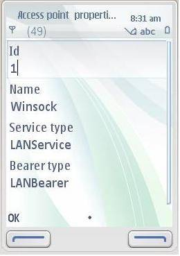

User Interface
When the midlet is loaded , the log is displayed on the screen .
Then the midlet is launched. The midlet runs two tests, the DNTest and the ACPTest.
Select the DNTest. The available destination networks are listed.
Select any one of the destination network and choose the option “DN Properties”
The ID, Name and accesspoint for the destination network is displayed
Select the destination network and choose the option “Do connection”. The Connection is started.

Run the ACPTest. Select the first option “Acc.point properties” for the listed access point.
The Access point properties are listed – ID, name, Service Type and Bearer type

Select the “Do Connection” option for the listed access point. Connection starts.
index